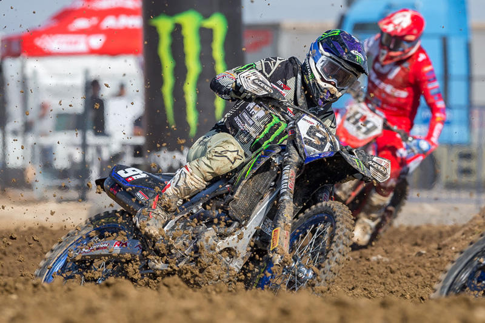
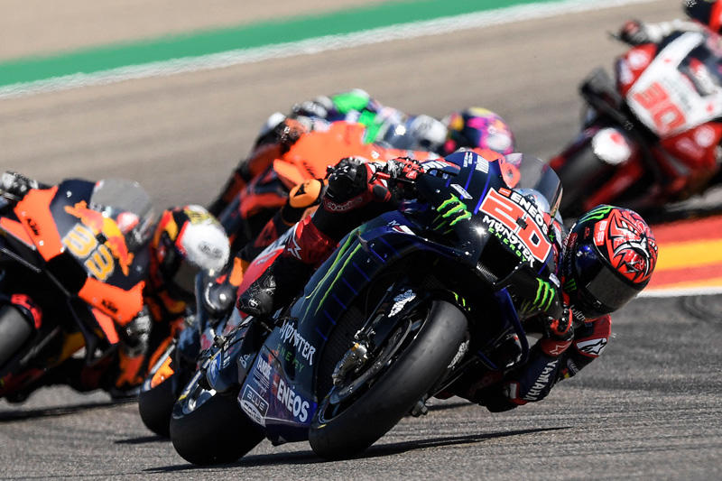
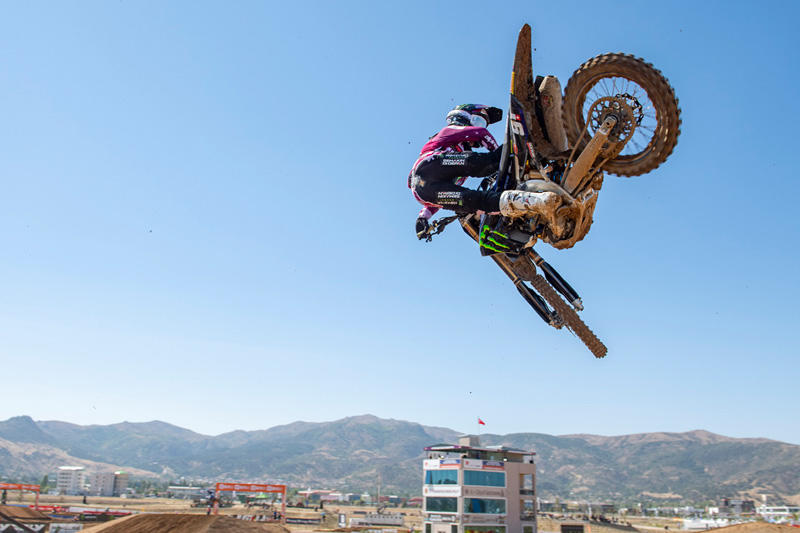
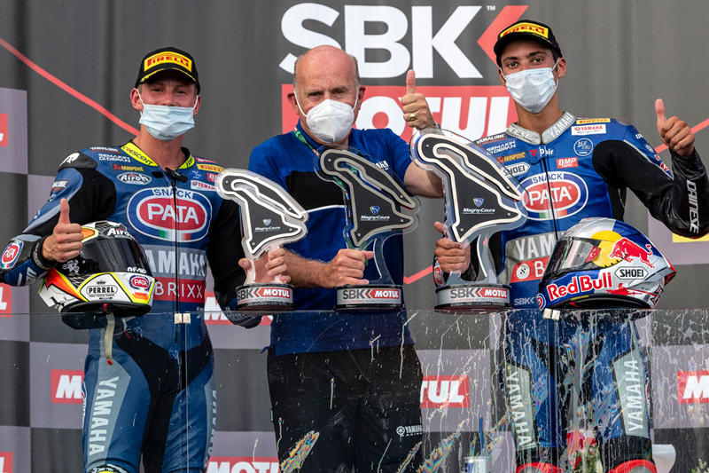
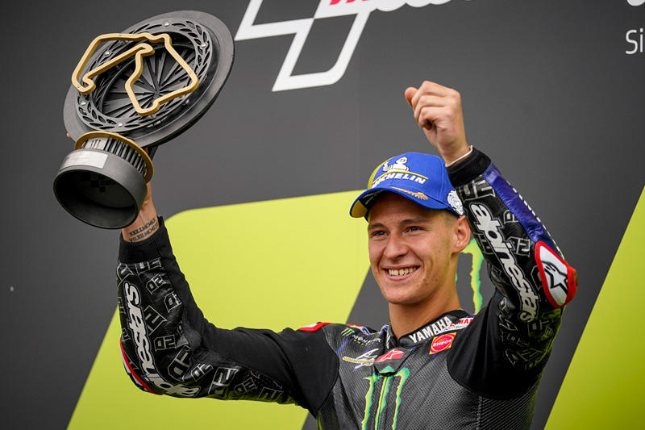

Monster Energy Yamaha Factory MXGP出战了在土耳其的阿菲永卡拉希萨尔举办FIM世界摩托车越野锦标赛第9战的比赛。杰里米 · 克顿霍夫都出现了较大的失误，两人斩获了15积分，名次分别为综合第13名和第14名。本 · 沃森的成绩超过了在周日举行的上一战比赛，斩获10个积分，获得综合第16名。
Monster Energy Yamaha MotoGP车队车手法比奥·夸塔拉罗陷入苦战，未能参与到领奖台之争，虽然如此，但他还是凭借其智慧和防御性的驾驶风格，坚持推动赛车直到最后一刻。最终，夸塔拉罗获得了第8名，斩获了包含贵的8个积分。卡尔·科拉奇罗同样向我们展示了他与生俱来的挑战精神，他在一度下跌到第19名后，重新追升至了第16名。
FIM世界摩托车越野锦标赛的8站土耳其GP在阿菲永卡拉希萨尔摩托运动中心举行， Monster Energy Yamaha Factory MXGP车队车手杰里米·西沃和格兰·克顿霍夫在炎热天气和严峻的路况条件下，分别拿到了综合第6名和综合第8名的成绩。本·沃森获得了第21名。
在第8站法国大赛的Race1中， Pata Yamaha with Brixx WorldSBK车队车手托普拉克·拉斯加特利奥路夺得了其在本赛季的第7个优胜。其对友安德里亚·洛卡泰利也获得了第3名，两人双双登上了领奖台。
Monster Energy Yamaha MotoGP车队车手法比奥·夸塔拉罗以领先第二名2.663秒的优势，夺得了本赛季的第5个桂冠。其队友卡尔·科拉奇罗从第19发车位出发，虽然他想要争取拿到积分，但最终还是未能如愿，仅获第17名
